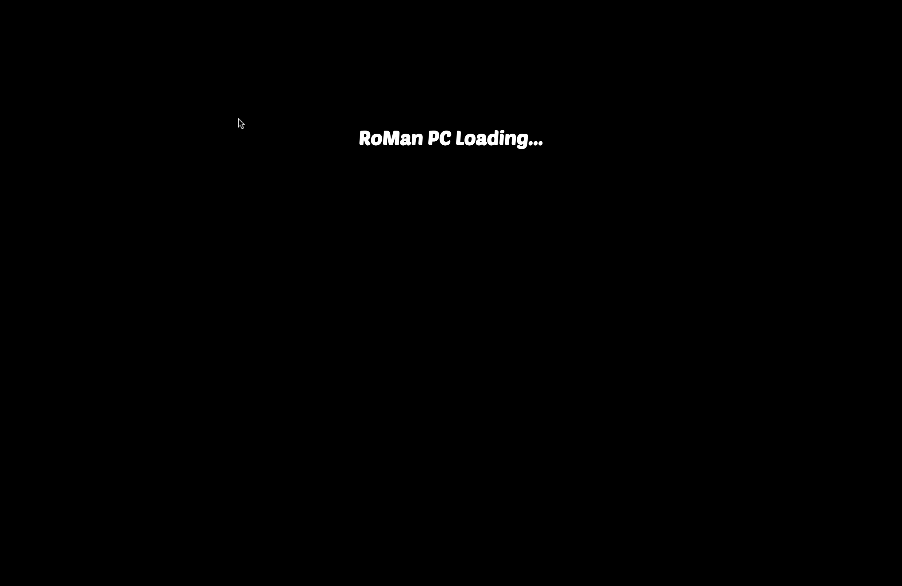
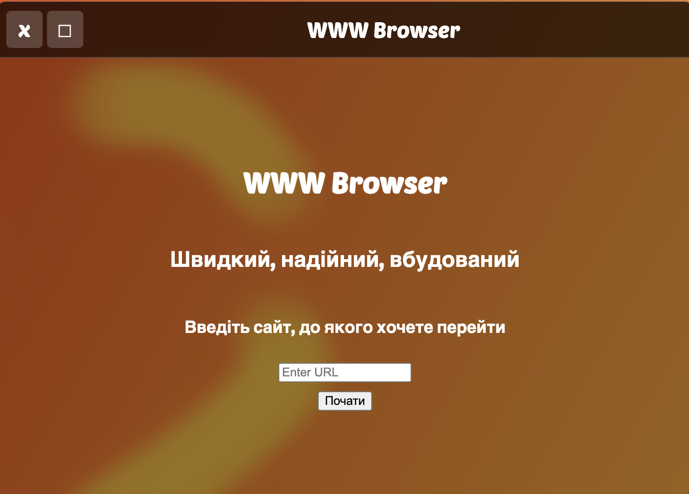
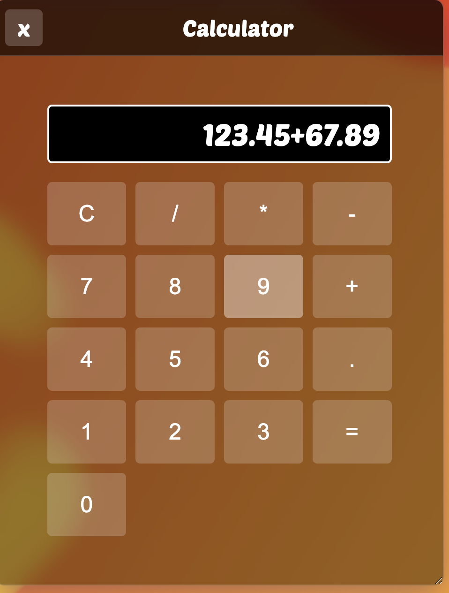
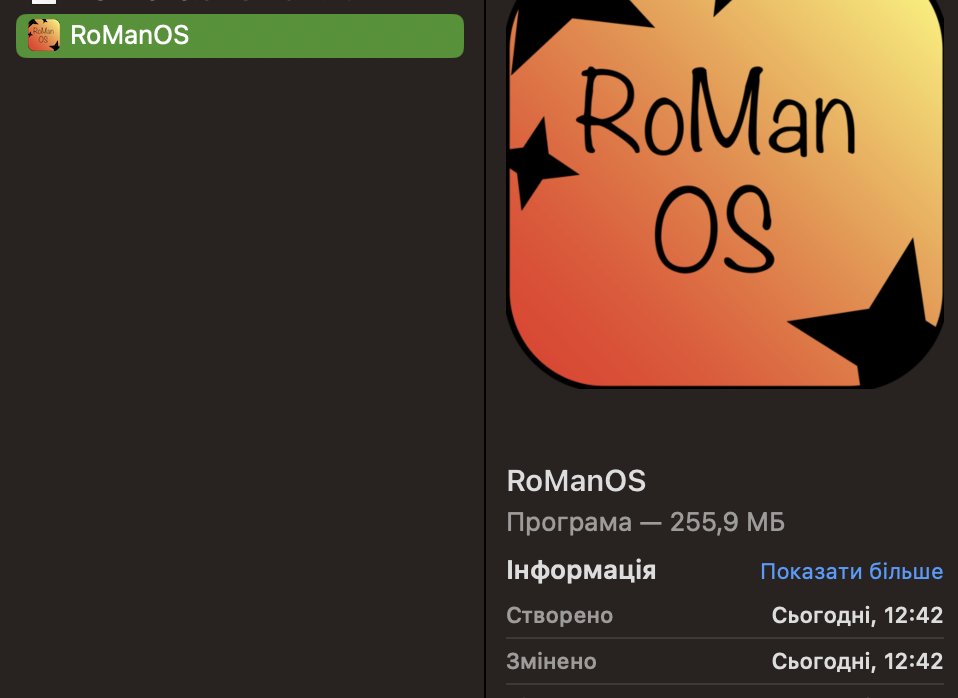

Про RoMan OS
RoMan OS - це революційний макет операційної системи, яка має зручний дизайн,
повноцінну багадозадачність та зручні програми для користування.
Програмка з системою продумана до дрібниць, в тому числі встановленні на "комп'ютер".
Зберігання усіх даних в localStorage допомагає при запуску програми знову зайти та користуватися ос без повторного встановлення
Скріншоти
Скріншоти з RoMan OS



Як завантажити?
- Натискаємо на кнопку завантажити, яка є трохи вище, головне натиснути на свою платформу, щоб все запустилося
- Чекаємо, коли завантажиться архів ZIP
- На Windows потрібно видобувати усі файли з архіва, там є спеціальна кнопка. На MacOS просто дабл клік.
- Запускаємо файл RoManOS(app і exe файли в залежності від платформи) 
- Вибираємо USB флешку в UEFI Pro, виконуємо встановлення системи(ніякі файли не качається це лише для виду) і насолоджуємось макетом!
Проблеми з відкриттям
Якщо при запуску додатку виникає помилка зі сторони безпеки, на MacOS налаштування, безпека, шукаємо трохи нижче
RoManOS і там дозволяємо.
На Windows при проблемі SmartScreen i Windows Defender натискаємо докладніше, відкрити.
Якщо не допомагає, рекомендую відключити всі антивіруси.